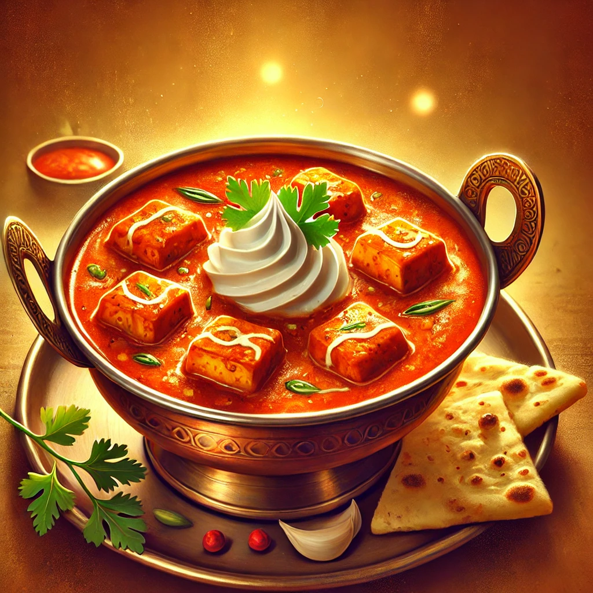

Paneer Butter Masala Recipe: A Creamy and Rich Delight
This flavorful Paneer Butter Masala recipe will guide you to create a rich
and creamy curry with soft paneer cubes cooked in a velvety tomato-based gravy. It's a
perfect dish to serve with naan, roti, or rice, and is a favorite among Indian food lovers.
Instructions:
Prepare the Base Gravy: Heat butter and oil in a pan. Add finely
chopped onions and sauté until golden brown. Add ginger-garlic paste and green chilies,
and sauté for 2 minutes.
Cook the Tomatoes: Add pureed tomatoes to the pan, along with turmeric,
red chili powder, and cumin powder. Cook the mixture on medium heat until the oil begins
to separate from the masala (spice mixture).
Make the Gravy Creamy: Add cream, milk, and sugar (if using) to the
pan. Mix well and let it simmer for 5-7 minutes, stirring occasionally.
Add Paneer: Gently add the paneer cubes to the gravy. Mix carefully to
coat them with the creamy sauce. Cook for another 5 minutes, allowing the paneer to
absorb the flavors.
Finish with Kasuri Methi and Garam Masala: Sprinkle kasuri methi and
garam masala over the curry, and give it a final stir.
Serving: Garnish with fresh coriander leaves and serve hot with naan,
roti, or rice.

Chinese Recipe
Vegetable Manchurian Recipe: A Spicy, Savory Delight
This recipe will help you make the perfect Vegetable Manchurian, a popular Indo-Chinese dish. These crispy, flavorful vegetable balls are cooked in a rich, spicy sauce that’s perfect as a starter or main dish. Enjoy it with steamed rice or noodles for a complete meal!
Instructions:
Prepare the Manchurian Balls: In a large bowl, combine the mixed vegetables, all-purpose flour, cornflour, ginger-garlic paste, green chilies, soy sauce, vinegar, pepper, and salt. Mix well and shape the mixture into small balls. Heat oil in a pan and deep fry the balls until they turn golden brown and crispy. Set aside on paper towels to drain excess oil.
Prepare the Sauce: In another pan, heat 1 tbsp oil. Add the chopped onions and bell peppers, sauté until soft. Add the soy sauce, tomato ketchup, chili sauce, and sugar. Stir well and cook for 2-3 minutes. Then, add the cornflour slurry and cook for another minute to thicken the sauce.
Combine the Balls with the Sauce: Add the fried Manchurian balls to the sauce and toss gently to coat the balls in the sauce. Let them cook in the sauce for 2-3 minutes, allowing the flavors to blend.
Serving: Garnish with chopped spring onions and serve hot with fried rice or noodles.